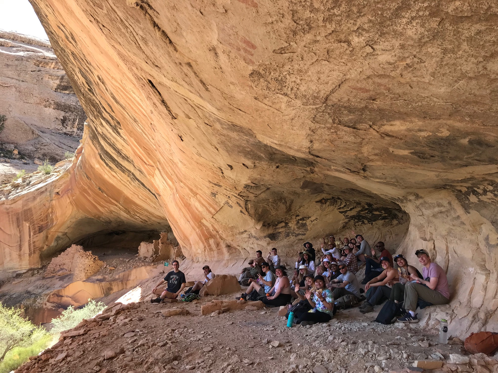
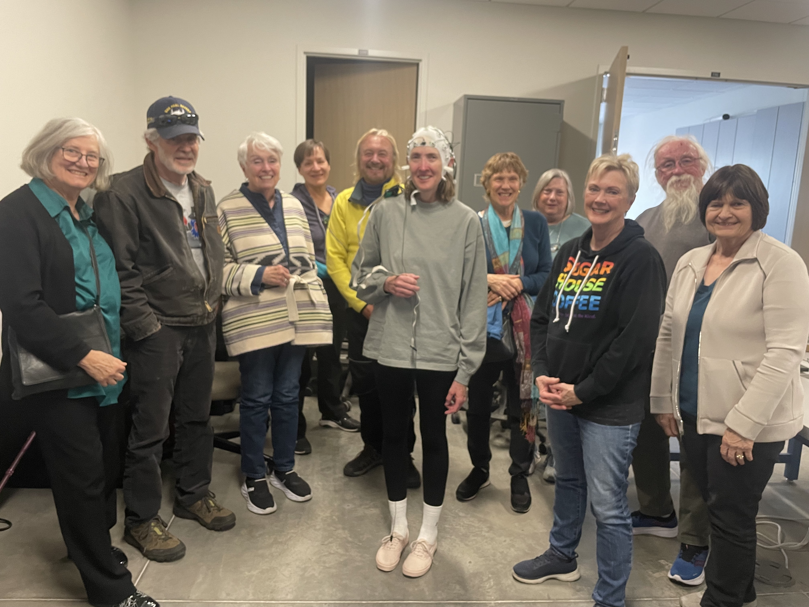
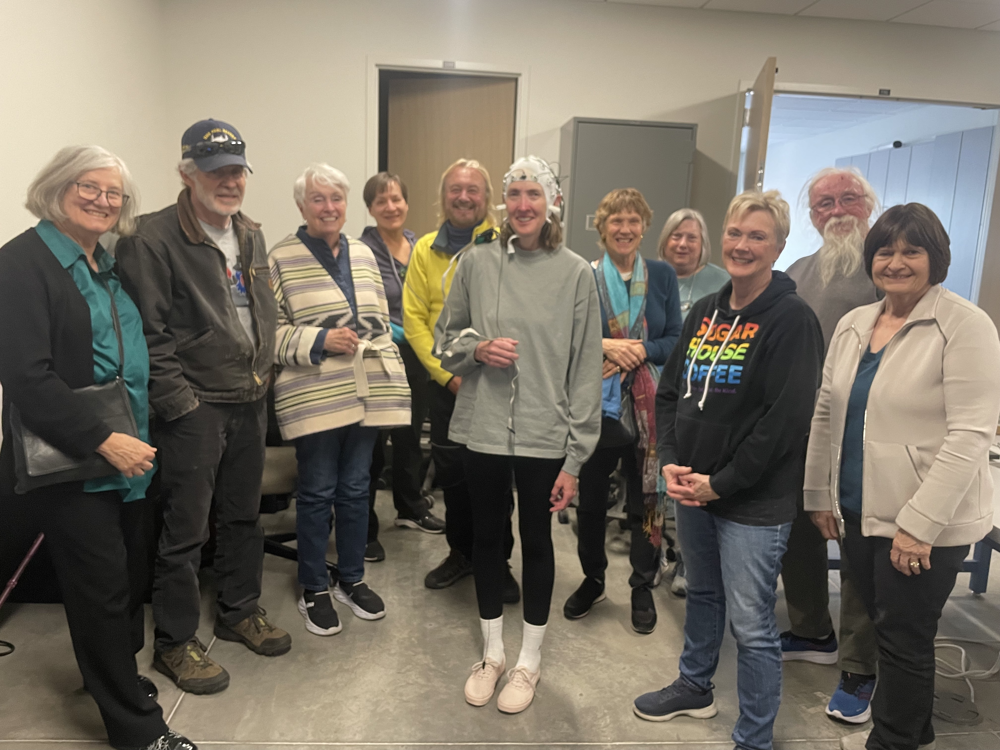

Teaching Philosophy
My passion for research is equally matched by a passion for teaching. Alongside my PhD, I obtained a designation in Teaching in Higher Education through the Center for Teaching and Learning Excellence at the University of Utah. I have since taught multiple undergraduate courses at the University of Utah, as well as at Utah State Prison and OSHER Lifelong Learning Institute. I am well-equipped to teach undergraduate and graduate courses in cognitive psychology, cognitive neuroscience, engineering psychology, brain and behavior, neuropsychology, research methods, data science using R and Python, and environmental psychology. In my experience, the most effective learning occurs through experiential engagement, where students actively participate and apply their knowledge to real-world situations. My ultimate goal is to inspire curiosity and for students to explore the subject matter beyond the classroom.
Courses Developed
PSY4130 Cognition in the Wild: This upper-division seminar course focuses on how humans interact with the natural environment. How does nature affect physical health? How does nature affect cognitive health? How can we encourage people to spend time in nature, while still conserving it? In this course, we use Southern Utah as a case study in exploring these questions. As part of the course, we take a 5-day field trip to Southern Utah in which we hike the slickrock, study pictographs and petroglyphs, and visit several ancient Anasazi dwellings. This course relies heavily on experiential learning and real-world applications of scientific research, and is designed to be adaptable for different universities across the US. The most recent syllabus for this course can be downloaded here.
OSHER Cognition in the Wild: This is an abbreviated version of Cognition in the Wild, geared toward lifelong learners (ages 50+). In this 6-week course, we take a deep dive into the influence of modern technology on the brain and the potential for immersion in nature to combat the mental fatigue and the stress assocated with our modern environments. This course culminates in a visit to our Red Butte Garden EEG laboratory for hands-on experience recording heart and brain activity. This course relies heavily on experiential learning and real-world applications of scientific research, and is designed to be adaptable for different universities across the US. The most recent syllabus for this course can be downloaded here.

 

Teaching Evaluations:
PSY4130 Cognition in the Wild, Fall 2023
PSY4130 Cognition in the Wild, Spring 2022
PSY4130 Cognition in the Wild, Spring 2020
Teaching Assistantships
Introduction to Psychology, Utah State Prison
PSY3960 Data Science for Psychology Majors, University of Utah
PSY2100 Cognitive Psychology, University of Utah
PSY3711 Brain and Behavior, University of Utah
Guest Lectures
PSY6700 Neuropsychology, University of Utah
PSY4010 Biological Psychology, Vermont State University
PSY2100 Cognitive Psychology, University of Utah
STAT6003 Survey of Statistical Packages, University of Utah
PSY3960 Data Science for Psychology Majors, University of Utah
PSY2010 Psychology as a Science and Profession, University of Utah
PSY4130 Cognition in the Wild, University of Utah